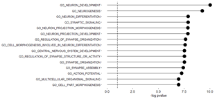

Gene set enrichment analysis
The idea in gene set enrichment analysis is to create a database of your genes of interest, and retrieve all linked GO (or other) annotations that belongs to each of the genes.
Once you retrieved that large list of annotations, you go over each annotation and define a gene set statistic that quantifies the score of the annotations.
After that you choose a statistical test to define which annotation scores differ significantly from what you would randomly expect.
Thus if you perform this on the genes of a set of factors from your MOFA model,
you expect these genes to be important in describing the biological state of your cells, meaning every enriched pathway in these genes will hold valuable information about the expression pattern of the originating cells.
This makes interpreting the MOFA factors even easier, since instead of having a list of "important" genes, you have a list of important pathways or processes, which immediatly tells you a lot more about your data.
For both datasets, we chose for the curated MSigDB gene set matrices, that consists of genes annotated by the same ontology term.
Our score quantifier was choses as the difference in the mean weight between foreground and background.
Our statistical test was the default parametric t-test.

Plotted here is an example of the positively enriched pathways we found in human